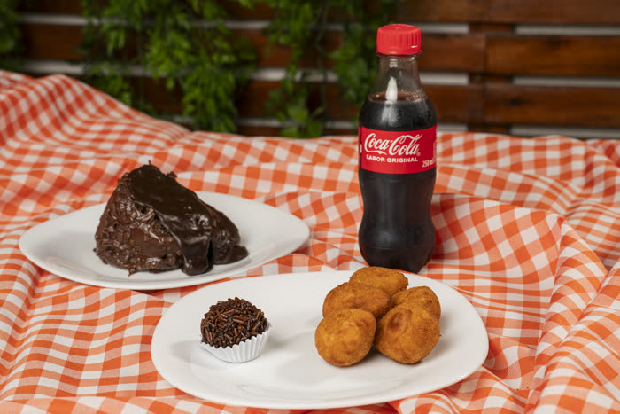
Mini coxinha
No tamanho certo pra circular na mesa de reunião.
Pão quentinho, salgados e doces fresquinhos — prontos pra reunião, treinamento ou confraternização da sua empresa.
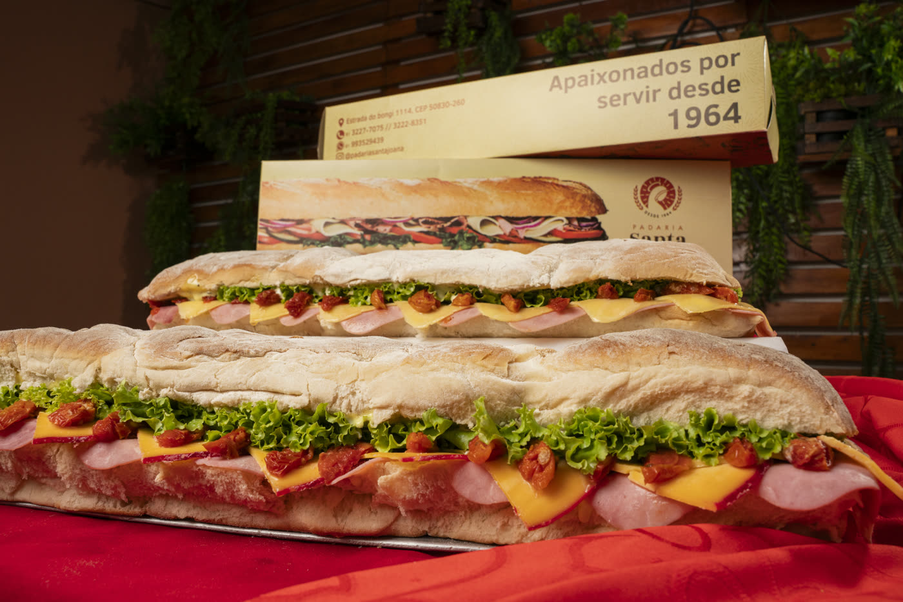
Desde 1964, a Padaria Santa Joana faz parte da rotina de Recife: o cheiro de pão saindo do forno de madrugada, o café passado na hora, o almoço caseiro pra quem trabalha por perto. Somos uma padaria de bairro que cresceu sem perder a essência — hoje também levamos marmita e kit festa pra sua casa e sua empresa.

No tamanho certo pra circular na mesa de reunião.
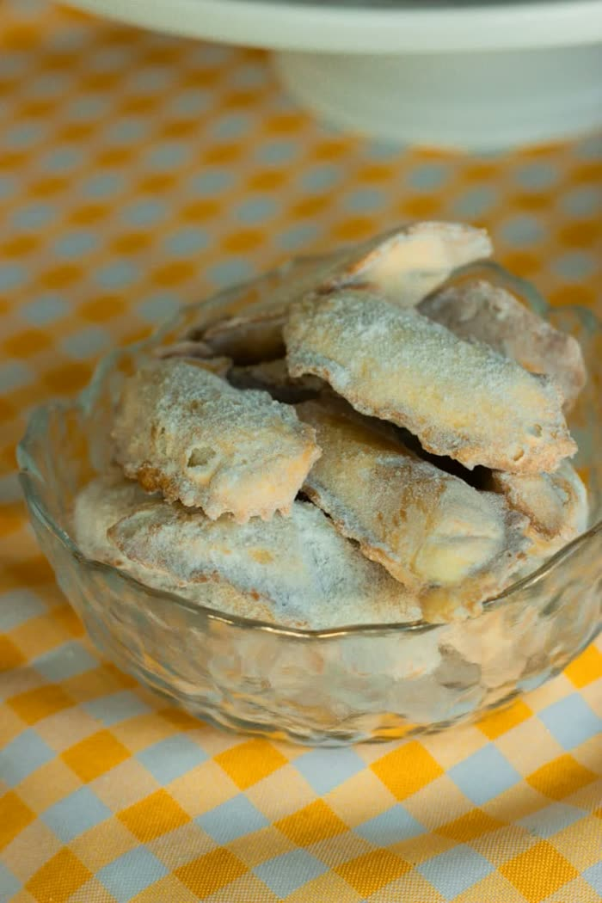
Sabores variados, sempre fresquinhos.
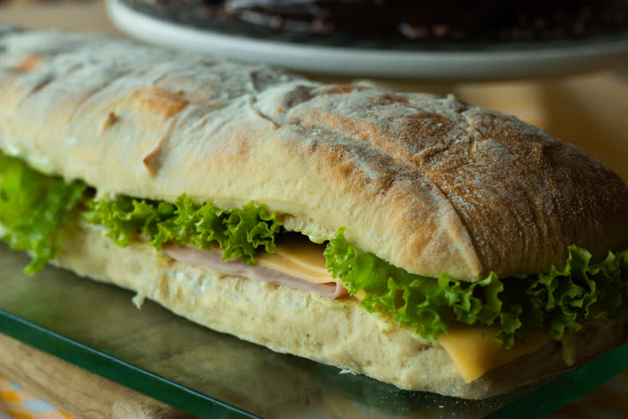
Recheado, corta fácil e serve o grupo todo.
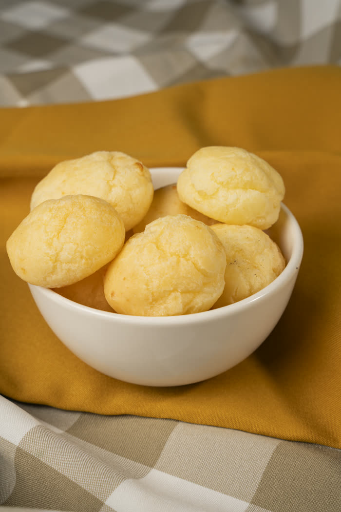
Sempre um sucesso em qualquer mesa de reunião.
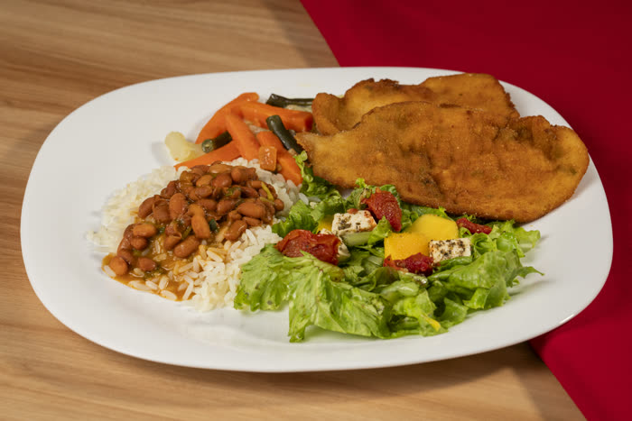
Arroz, feijão, salada e proteína — o clássico prato do dia.
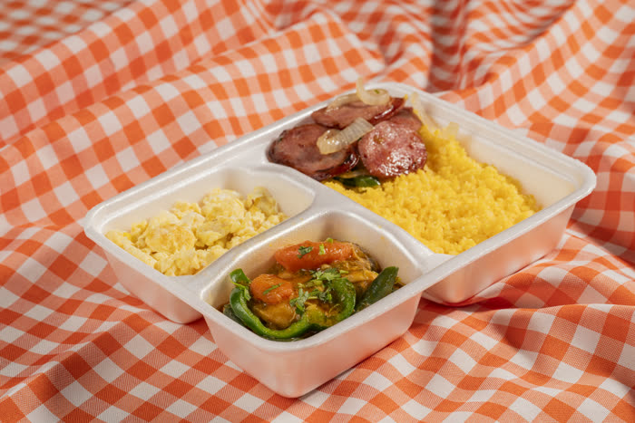
Comida caseira, pronta pra levar pro trabalho.
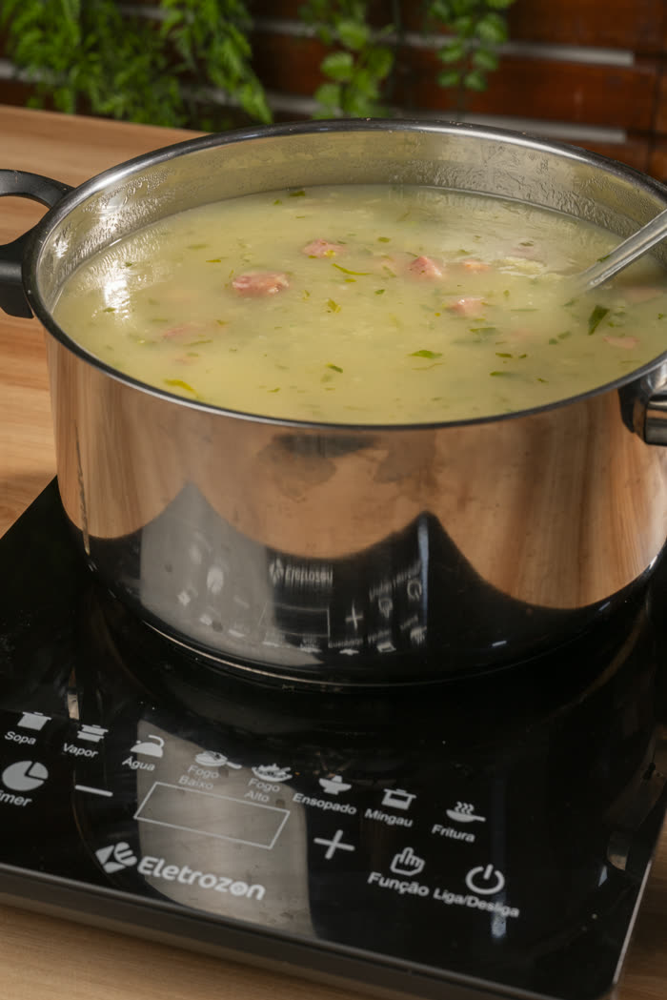
Quentinha e reconfortante, ótima pra qualquer hora.
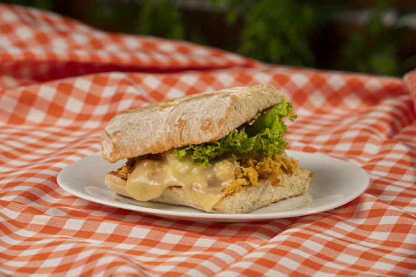
Sanduíches fresquinhos, feitos na hora.
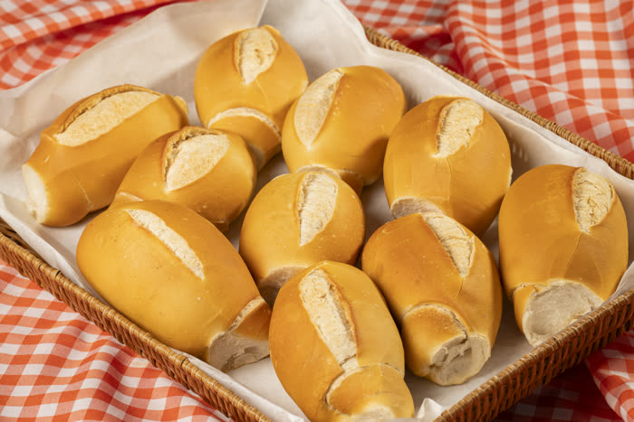
Assado várias vezes ao dia, crocante por fora e macio por dentro.
Receita de casa, quentinho toda manhã.
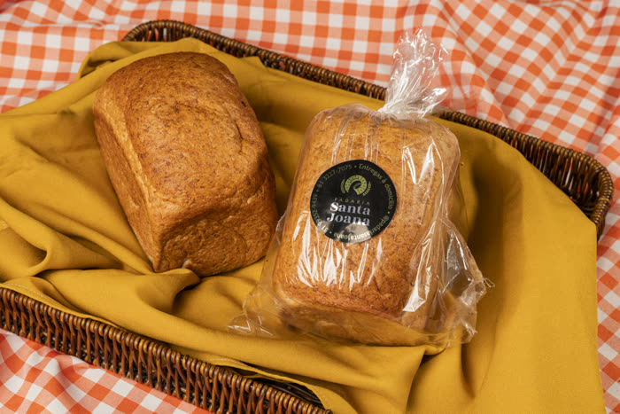
Fresquinho e fofinho, do jeito de sempre.
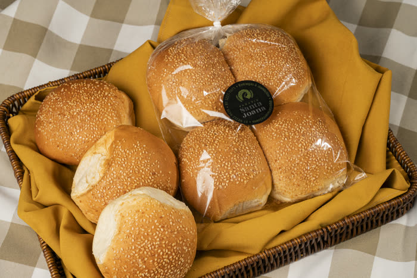
Com e sem gergelim, macio e feito na hora.
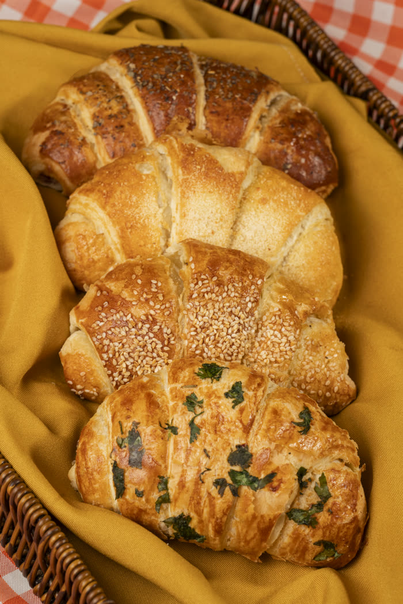
Folhado, amanteigado — salgado ou doce.
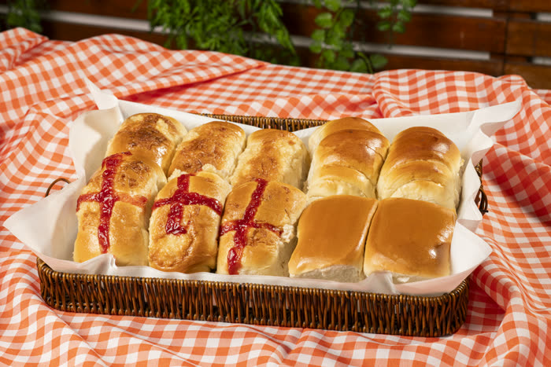
Com geleia, clássico de padaria de bairro.
Não encontrou o que procurava? Fala com a gente pelo WhatsApp.
Falar no WhatsAppUma das melhores padarias da região, com uma grande variedade de produtos. O pão é excelente, o atendimento é maravilhoso e tem estacionamento com vagas reservadas para idosos e com acessibilidade. Recomendo demais!
A padaria de fato é muito boa, os pães são maravilhosos e os preços são acessíveis.
Ambiente limpo e organizado, comida excelente e os funcionários extremamente educados e solícitos. Com certeza voltarei mais vezes 🥰
Ambiente agradabilíssimo, ótimo para reunião, ou até mesmo ir ler e tomar um bom café. Atendimento de qualidade, comidas saborosas e muito bem temperadas, ambiente limpinho.
Tem um buffet de almoço bem completo, com boa variedade de pratos, saladas e carnes. A comida em geral é muito saborosa, feita com esmero. Tem também boas opções de sobremesa.
Essa padaria tem história. Lembro de minha infância quando ia lá pra comer um pão doce com refrigerante. Ótimos produtos.
Ambiente agradável e funcionários atenciosos, a comida é boa e com preço justo.
Possuem ótimas opções na hora do almoço: verduras, massas e carnes.
Lugar ótimo para almoçar. Comida deliciosa! Os lanches também são.
A qualidade do pão é ótima.
Minha tia Beta gosta das sopas, e minha esposa gosta dos pães.
Variedade grande de pães e bolos.
Avaliações reais de clientes no Google. Fonte: perfil da Padaria Santa Joana no Google Business.